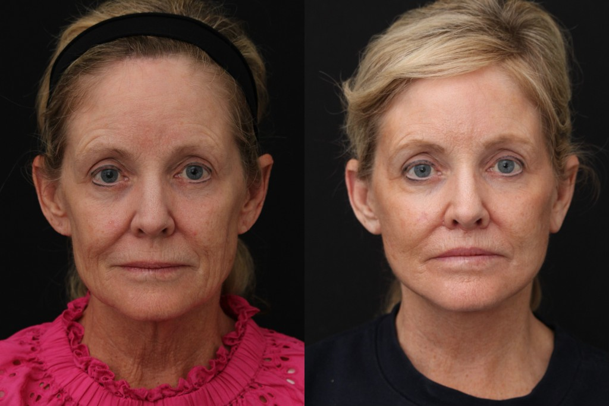
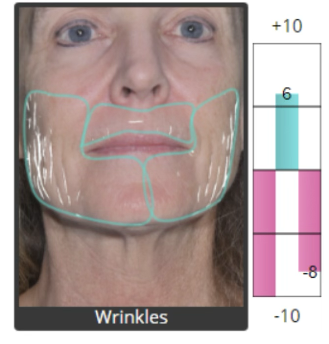
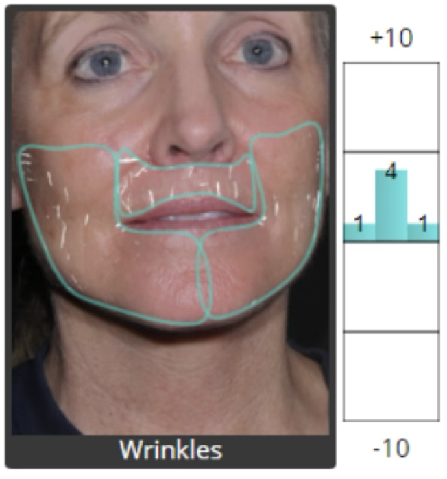
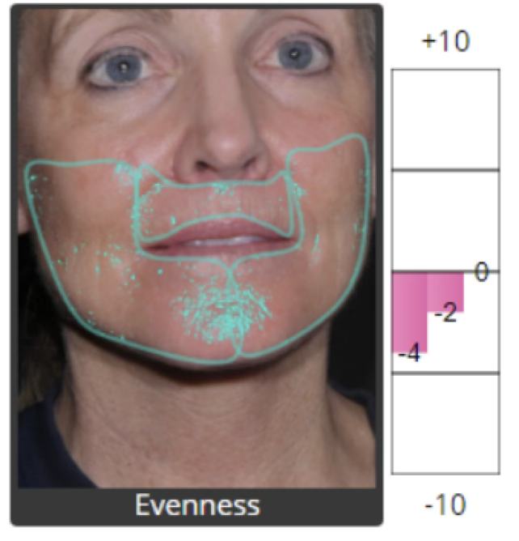
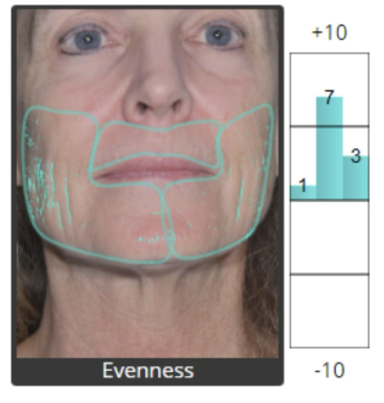
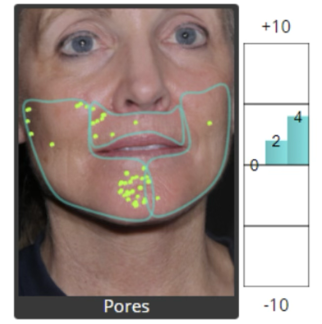
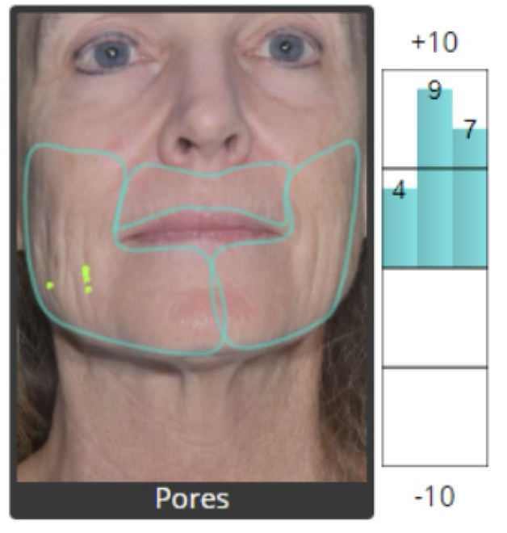

The science behind Lipoderma
Real fat tissue.
Ready when you are.
Most fat restoration today uses autologous tissue—the patient and donor must be the same person. Britecyte solved the immunogenicity barrier that kept adipose limited to autologous use, making off-the-shelf allogeneic fat possible without rejection.
-
Qualified donor adipose
Human adipose tissue is recovered from qualified donors under established tissue-banking standards. This provides the biological starting material: native fat cells with its extracellular structure intact, before any Britecyte processing begins.
-
Immunogenicity resolution
Britecyte's proprietary, patent-protected process addresses the immunogenicity that has historically restricted adipose to autologous use. The tissue is processed to enable allogeneic transplantation while preserving native architecture—not reduced to a synthetic gel or cross-linked filler.
-
Native allograft
The result is a ready-to-use human adipose allograft developed without synthetic agents, cross-linkers, or foreign scaffolds. Lipoderma maintains like-for-like tissue structure: a biocompatible, off-the-shelf product your provider can implant directly. The formula preserves intact adipocytes and extracellular matrix in a 90:10 ratio—unmatched in the industry.
-
Patient restoration
Experienced providers implant Lipoderma where adipose has been lost, restoring the fat that supports healthy, youthful-looking skin in the face, hands, and areas affected by volume loss. Over 650 patients have received Britecyte allografts to date.
Measurable outcomes
Native restoration, visible in the data.
Restoring like-for-like adipose tissue changes more than contour. In patients who received Lipoderma, standardized facial imaging shows movement across wrinkle depth, skin evenness, and pore visibility—alongside the volume restoration visible in clinical photography.







Imaging analysis from standardized facial photography. Individual results vary. Additional case documentation available on request.
Proven in patients
Lipoderma has been successfully implanted in 650+ patients with a strong safety profile across a growing provider network.
Rigorous screening and processing
Donor tissue is carefully screened and processed under strict quality and safety standards—the same discipline that makes allogeneic transplantation possible in the first place.
Patent-protected platform
Core allogeneic adipose technology has received patent protection, the scientific foundation behind every vial of Lipoderma.
Ready to explore?
Understanding the science is one step. Start with someone who knows the product—not just the category.